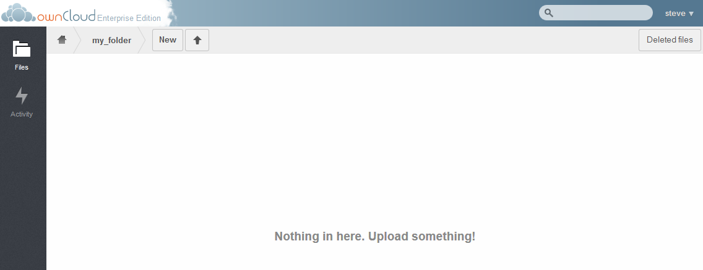
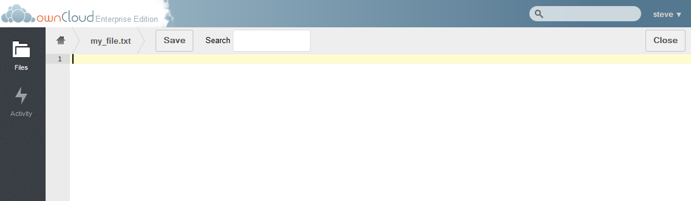
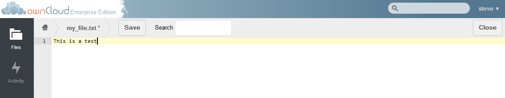
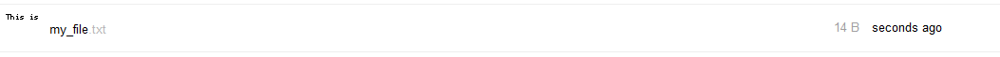
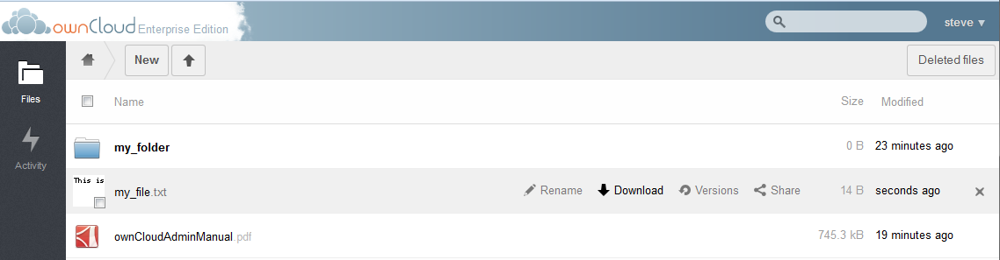

Navigation¶
Changing directories¶
To navigate to other folders within ownCloud, simply click on the desired folder.

Notice that Section 3 shows the currently displayed directory “my_folder”. To navigate back to the root directly, select the “Home” button.
Viewing/Editing files¶
ownCloud has the ability to view text files as well as pictures. To view a text file or a picture, click on the file.

For text files, a text editor will be brought up allowing the user to modify the file as desired. Just type the desired text and select “Save” to commit the changes. Once changes have been made to the file, prior to saving, the name of the file will have an “*” next to it indicating it has yet to be saved.

Once changes have been saved, a thumbnail of the text file will appear in the main data window.

Downloading a file¶
To download a file from ownCloud to your working computer, hover over the file and then select the “Download” button.

For non-text or picture files, the user may also click on the file name to download it.
Renaming files or Folders¶
To rename a file or folder within ownCloud, hover over the file and select Rename. Then type the new name of the file or folder.
Sharing, Versions, Delete, and Activity¶
For more information on the sharing, versions, deletion or Activity features, please see the respective documents.